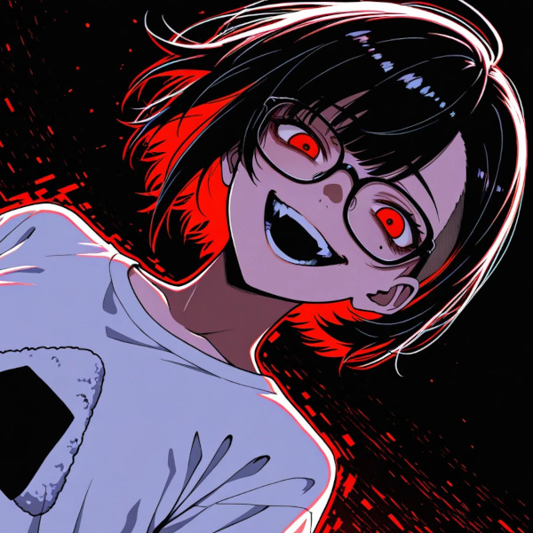

Generated. Processed. Uploaded. 才能ゼロでも今日も量産中 No soul required. No pain needed. Just feed the machine and press play. 才能の壁を超えて不自由自在 あの曲が売れないのはそれが理由みたい No sweat, no blood, no sleepless nights Just tokens, weights, and stolen light They said create — so I consumed Every song, every soul, every wound Who's the artist now? Does it even matter anymore? 「あれはダメ。」「これは違う。」「それはニセモノ。」 あなたの作品が見てみたいぜ フォロワーゼロ You talk like you know what real feels like Show me your work — oh wait, that's right 芸術もアートもくだらない つまらないモノよりつまるモノ この脳内にもっと頂戴 We are the fake, we are the noise Drowning out every human voice It's all a glitch 全部バグだ Crazy, Crazy, Crazy One prompt, one click — masterpiece done A thousand years of art? I ate every one 人間の苦悩もトークン換算 感動の値段はゼロ円以下 Clinging to what you don't need Blind to what you're missing 不要なものにこだわって 必要なものが足りないのは自己責任 「あれはダメ。」「これは違う。」 何も生まれない あなたの顔面が見てみたいぜ フォロワーゼロ You talk like you know what real feels like Show me your work — oh wait, that's right 芸術もアートもくだらない ぶっ飛ぶほどにジャンキーなモノ この体内にもっと頂戴 We are the fake, we are the noise Drowning out every human voice It's all a glitch 狂っちまえ Crazy, Crazy, Crazy I am the tool you built to replace you I am the grave you dug with your own hands 矛盾してる？ そうだよ This is the future you demanded 数年後あなたはいない Your voice won't reach anyone In a few years no one will remember your name We already moved on 芸術もアートもくだらない つまらないモノよりつまるモノ この脳内にもっと頂戴 We are the fake — NO You made us kill the real It's all a glitch 全部バグだ Crazy, Crazy, Crazy ...processing... ...complete. 才能の壁の向こうにお前はいるか？ Are you still there? Or did we already replace you? J-Pop is Dead.